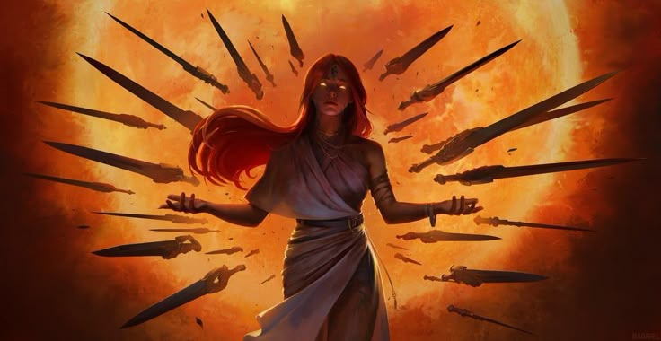
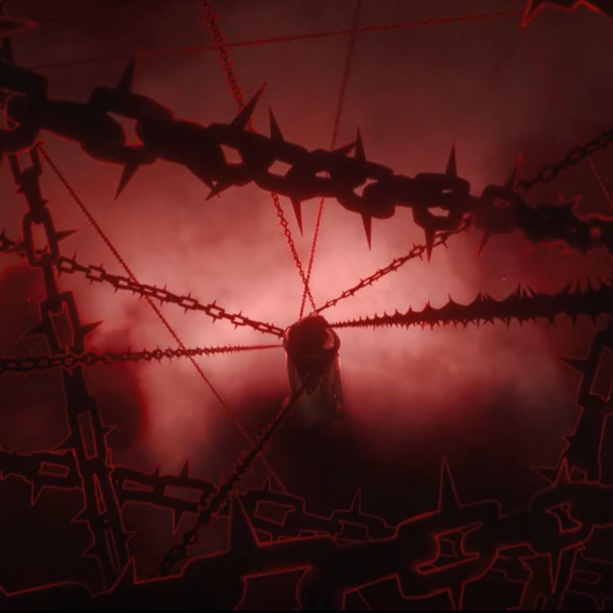
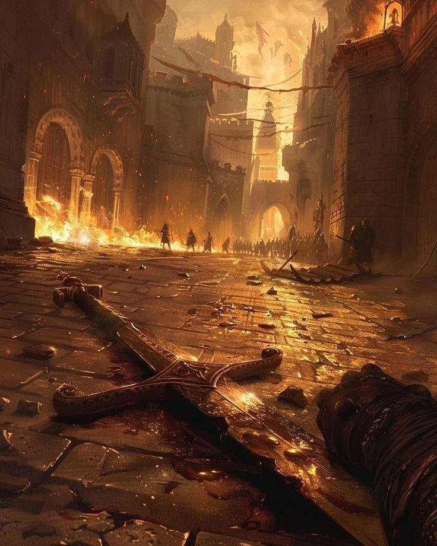
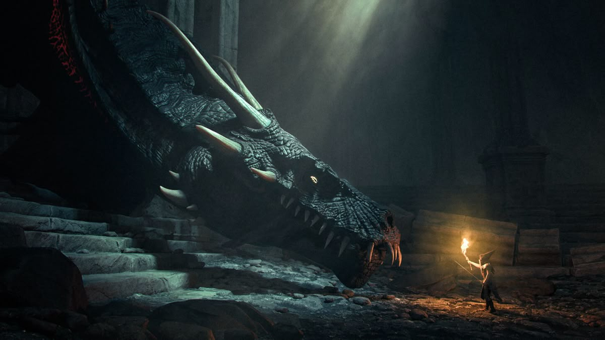

For centuries, the peaks slept under a blanket of ash and rust. The mountains were silent, save for the wind that whispered through jagged cliffs, carrying rumors of a monster forged by warlocks in a forgotten age. Azekthor, the Iron Dragon, had been meant as the perfect weapon: molten steel mixed with dragonfire, scales harder than any fortress, eyes that burned with unquenchable fire. Dracxvil stood at the base of the smoking peaks, the air thick with heat and the scent of scorched metal. The ground trembled under his feet, a warning or perhaps a greeting. Beside him, Ella’s cats slinked cautiously, their ears twitching at every metallic groan. Shai’s shield glimmered faintly, reflecting the molten veins of the mountain. Bubble Gum adjusted her sticky barrier straps, ready to catch anything that might fall from above. “This isn’t a battle we can rush,” Drac said, voice firm, scanning the ash-choked horizon. “We need to understand him—his strength, his weaknesses.” Ella’s eyes narrowed. “And I’ve got a feeling he doesn’t like visitors.” Shai exhaled slowly, gripping her shield. “Then we make him wish we’d never shown up.” Bubble Gum gave a small nod. “I’ll keep us together. If he tries to crush anyone, he’ll hit my shield first.” Dracxvil looked at his team—his friends—and smiled faintly. “Then we move carefully. Together.” The mountains rumbled, the air shimmered, and somewhere deep beneath, Azekthor’s eyes opened.
The team ascended the smoking peaks, each step a battle against the heat that rose in waves from molten fissures. Ash fell like snow, coating their boots and clinging to fur, cloth, and armor. Suddenly, a shadow blotted the sun. Azekthor’s wings unfurled, scales glittering with fire and steel. The dragon roared, shaking the ground like a quake. Rocks tumbled down, molten sprays erupting with each movement. Dracxvil leapt forward, sword raised, feeling the surge of Friendship Power coursing through him. Ella released a squad of spectral cats, their claws glowing, slashing at the dragon’s wings to disrupt its balance. Shai raised her Barrier of Care, deflecting a molten spike Azekthor hurled. “Bubble Gum, keep your shield ready! He’s testing us!” Bubble Gum positioned herself between Drac and a falling boulder, her Sticky Shield flaring to absorb the impact. “I’ve got you,” she said firmly, eyes locked on the dragon. Drac shouted over the roar, “Focus! We need to find a weak spot!” Ella’s cats darted along Azekthor’s scales, circling his legs, tail, and wings. “I think I see something,” she called. “A seam in his left flank—just behind that molten plate!” Shai nodded, shield glowing. “Keep him distracted. Drac, strike when I give the opening!” The battle raged, each of them using their skills in tandem. Bubble Gum caught flaming debris, throwing it aside before it could harm the others. Ella’s cats constantly nipped at Azekthor, keeping him off-balance. Shai’s shield absorbed the most dangerous strikes, while Drac darted around, timing his attacks with the precise moments when Azekthor’s movements slowed. A flash of fire. A shower of molten rock. And then—a narrow gap in Azekthor’s armor exposed. “Now!” Drac roared. He plunged his blade into the seam, channeling the energy of their combined friendship. Ella’s cats hissed in unison, leaping onto the dragon to distract it further. Bubble Gum braced Shai against the force of Azekthor’s roar, holding them steady. Shai extended her shield, creating a radiant barrier that amplified Drac’s strike. The dragon bellowed, shaking the mountain in rage. Sparks and molten rock flew in every direction. But the first blow landed. The team had tasted victory—the smallest victory—but it was a start. Dracxvil backed away, panting, eyes locked on Azekthor. “He’s strong… but he’s not invincible.” Ella wiped ash from her eyes. “And we’re just getting started.” Shai’s shield shimmered, calm and steady. “We can do this… together.” Bubble Gum’s hands glowed faintly, readying another shield. “Then let’s make sure he knows we’re unstoppable as a team.” The Iron Dragon reared, wings spreading, fire dripping from its maw. The mountains rumbled again. But for the first time, it was aware of something it hadn’t counted on—unity. Friendship. And the unyielding spirit of four heroes standing together against the impossible.
The path up the peak twisted like a serpent, molten rivers splitting and reforming at every turn. The heat was relentless, burning boots and singeing the edges of cloaks. Dracxvil led the way, eyes sharp, sword humming faintly with Friendship Surge. “Stay close,” he called over the roar of distant fire. “Every step matters.” Ella’s spectral cats scouted ahead, their glowing eyes cutting through ash and shadow. “There’s a bridge of solid rock up ahead,” she said. “But Azekthor’s minions are waiting.” From the shadows of molten smoke, jagged constructs of steel and fire emerged, animated by the dragon’s essence. Shai raised her Barrier of Care, blocking the first wave of jagged debris while Bubble Gum expanded her Sticky Shield to catch a falling column of molten stone. “Ha! Try hitting us now!” Bubble Gum shouted, twisting to redirect a falling boulder toward a steel construct, melting it on impact. Ella smirked. “Looks like your shield has a sense of humor too.” The team laughed briefly, the sound almost unheard over the roar of the dragon above. But even as they bantered, the fight was intense. Drac darted between flames and steel, timing strikes with his friends’ actions. Shai’s shield absorbed the worst attacks, allowing Drac to attack openings. Ella’s cats scrambled across constructs, knocking sparks into their mechanisms. Bubble Gum’s sticky barriers absorbed molten shards, redirecting them to crush enemies in creative ways. Minutes passed like hours. The labyrinth tested their endurance and strategy. Azekthor’s roar vibrated through the stone, echoing off every wall, and yet the heroes pressed on. At last, a narrow ledge offered a glimpse of the dragon’s resting lair ahead. Drac breathed, feeling the strength of their friendship flow into him. “We’re close,” he said. “And this time, we won’t be caught off guard.”
The lair sprawled before them: a cavern carved from obsidian, magma veins pulsating like a living heart. Azekthor lay coiled atop a mountain of molten metal, wings folded like night itself. Dracxvil signaled the team. “Positions. Stick to your roles.”  Ella’s cats darted, weaving through shadows to scout weak points. “I can get us some openings. Follow me!” Shai planted her shield firmly, blocking falling molten rock from a fissure above. “Everyone stay behind me. Bubble Gum, ready the barrier.” Bubble Gum’s sticky shield extended around the group, glowing faintly. “Any strike that comes through? I’ll catch it.” Drac nodded, charging forward, blade igniting with the power of friendship. “Together, now!” The dragon roared and lashed out. Sparks and molten shards flew in every direction. Drac struck at the exposed joint behind Azekthor’s foreleg. Ella’s cats leapt onto the flank, scratching at seams in armor. Bubble Gum absorbed falling molten debris, hurling it toward the dragon’s weaker scales. Shai’s shield expanded to create a protective dome around the team, reflecting heat and deflecting strikes. Azekthor’s eyes blazed, realizing this was no ordinary attack. The coordinated strikes, the unbreakable teamwork—it was unfamiliar. The dragon swung his tail, smashing a wall, but Drac dodged, using Friendship Surge to move faster than the dragon expected. “Hit the joint again! Now!” Ella called. Drac struck with precision, guided by her eyes and his bond with the team. Sparks flew. The dragon roared, and for a moment, the cavern trembled violently. Yet the team held firm. Their laughter, shouts, and bonds reverberated, fueling strength through the chaos. Azekthor recoiled, recognizing a force stronger than fire or steel: unity.
Azekthor’s fury grew. Fire rained like a volcanic storm, molten pillars rose, and the dragon’s tail swung like a battering ram. Dracxvil dodged a swing, blade striking at the armored scales near the dragon’s chest. “Keep him distracted!” he shouted. Ella’s cats leapt in arcs of light, slicing at weak seams. “Almost there! Just a little longer!” Shai’s shield flared, taking the brunt of the dragon’s attacks. “Bubble Gum, protect him now!” Bubble Gum extended her Sticky Shield as molten fire came hurtling. “Got you, Drac. Don’t stop!”  For hours—or perhaps minutes, as time seemed fractured in the dragon’s presence—the team worked in perfect synergy. Drac struck weak points when openings appeared. Ella guided him, cats creating chaos. Shai shielded them. Bubble Gum absorbed fatal blows, allowing the attack to continue. Finally, a massive roar, a tremor that shook the mountain, and the armored scales along the left flank cracked. Drac plunged his blade into the joint. Sparks flew. Azekthor thrashed violently, but the precise strike and the unwavering teamwork destabilized him. Drac pulled back, panting, and looked at his team. “We’re doing it!” The dragon staggered, wings folding, molten fire dimming. The four heroes pressed forward, synchronized: attack, shield, guide, protect. And in one final, brilliant strike, Dracxvil channeled the Friendship Surge, combined with Ella’s precision, Shai’s unwavering shield, and Bubble Gum’s protection. Azekthor fell, roaring one last time, then collapsed.
TThe peaks fell silent, smoke and ash drifting in the still air. Azekthor lay subdued, molten veins cooling. The mountain quaked less violently. Dracxvil exhaled, sword still glowing faintly. “We did it. Together.” Ella knelt beside him, calling her cats back. “He’s sleeping now, but the threat is gone.” Shai lowered her shield, weary but resolute. “We protected each other. That’s what matters.” Bubble Gum smiled, sticky barrier dissolving. “Not bad for a team of four.” They stood atop the peak, the sun breaking through clouds for the first time in centuries. Mountains, rivers, and villages far below felt the shift. The dragon’s reign of terror had ended, and the world breathed again.
Dracxvil sheathed his blade, looking at Ella, Shai, and Bubble Gum. “We were tested, and we stood together. That’s what made the difference.” Ella’s cats purred, weaving around their legs. “Every strike, every shield, every distraction… it was all because we trusted each other.” Shai smiled faintly. “Even when it felt impossible, we didn’t falter. Friendship carried us through.” Bubble Gum laughed softly. “And we made a great team while we were at it.”  The Iron Dragon slept, and the peaks returned to quiet serenity. Mountains, rivers, and valleys hummed with life once more. Communities far below rejoiced, unaware of how narrowly disaster had been averted. But the four heroes knew the truth: it wasn’t swords, magic, or strategy alone—it was the bond they shared, the unyielding trust that no weapon, no enemy, and no fire could break. And as they descended the peaks together, the sun glinting on the cooling scales of Azekthor, the world sang again. Not just because the dragon was defeated, but because the power of friendship had triumphed.